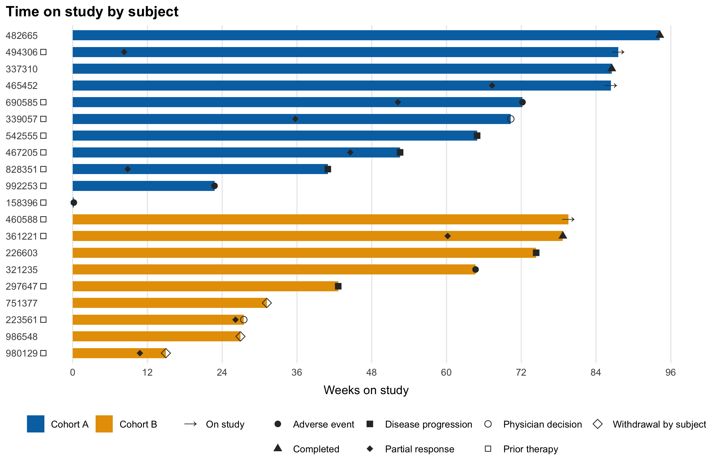

ggswimlane is a ggplot2 extension for swimlane (swimmer) plots, a common way to show patient trajectories through a clinical trial: one bar per subject, with events, status, and baseline characteristics marked along each lane. Legends come for free, and the default palette and theme are ready for reports without further styling.
Installation
You can install the development version of ggswimlane from GitHub with:
# install.packages("pak")
pak::pak("tgerke/ggswimlane")Example
A complete swimlane from the bundled patient_disposition data. Each geom_swimlane_*() layer takes bare column names, and every symbol is added to the legend automatically:
library(dplyr)
library(ggplot2)
library(ggswimlane)
patient_disposition |>
mutate(
prior_drug = if_else(prior_drug == "Yes", "Prior therapy", NA)
) |>
order_swimlane(subject, weeks_on_study, cohort) |>
ggplot() +
geom_swimlane(subject, weeks_on_study, cohort) +
geom_swimlane_status(subject, weeks_on_study, reason_off_study) +
geom_swimlane_marker(
subject, partial_response,
marker_label = "Partial response"
) +
geom_swimlane_rug(subject, prior_drug) +
scale_x_continuous(breaks = scales::breaks_width(12)) +
labs(title = "Time on study by subject", x = "Weeks on study") +
theme_swimlane()
The gallery vignette walks through simpler starting points, stacked treatment phases, text annotations, and customization.